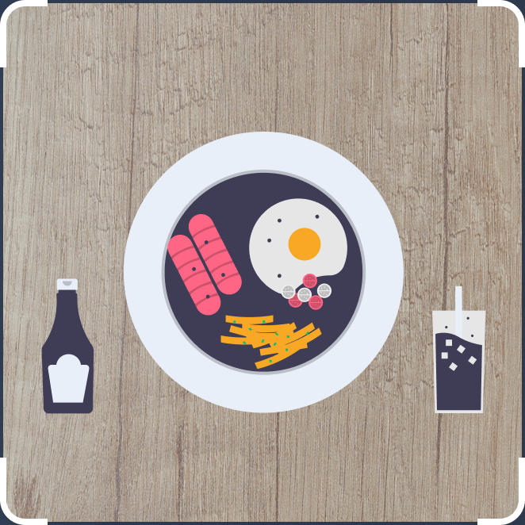

<ion-content padding class="background">
  <div id="titulo">
    <ion-toolbar>
      <ion-buttons slot="start">
        <ion-icon name="chevron-back" id="back-icon" [routerLink]="['/home']"></ion-icon>
      </ion-buttons>
      <ion-title>Enquadre seu prato</ion-title>
      <ion-buttons slot="end">
        <ion-icon name="ellipsis-vertical-outline"></ion-icon>
      </ion-buttons>
    </ion-toolbar>
  </div>
  <div id="bg"></div>
  <div id="tela">
    
    <span id="text-footer">Posicione seu prato dentro do frame, de forma<br>que todos os elementos apareceçam claramente.</span>
    <button (click)='openCamera()'>Scan</button>
  </div>
</ion-content>